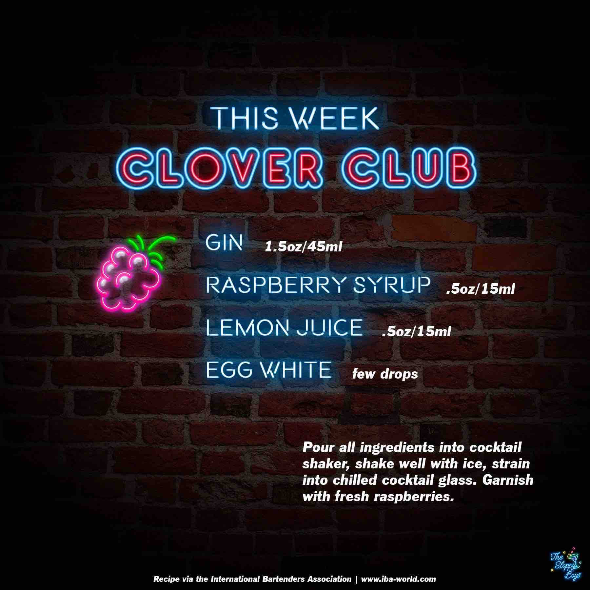

Clover Club
Ingredients
- Gin (1.5oz/45ml)
- Raspberry Syrup (.5oz/15ml)
- Lemon Juice (.5oz/15ml)
- Egg White (few drops)
Steps
- Pour all ingredients into cocktail shaker, shake well with ice, strain into chilled cocktail glass.
- Garnish with fresh raspberries.
Notes